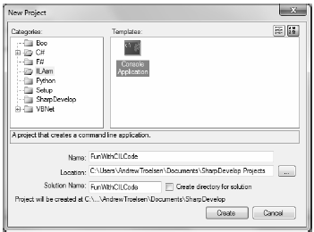
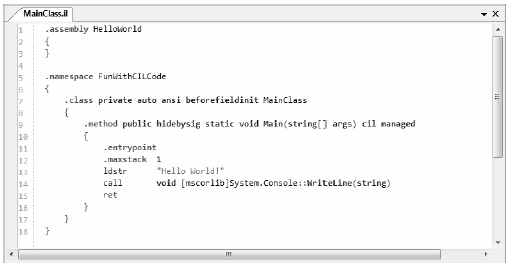

You are aware of how to use ildasm.exe to view the CIL code generated by the C# compiler (see Chapter 1). What you may not know, however, is that ildasm.exe allows you to dump the CIL contained within an assembly loaded into ildasm.exe to an external file. Once you have the CIL code at your disposal, you are free to edit and recompile the code base using the CIL compiler, ilasm.exe.
Note Also recall that reflector.exe can be used to view the CIL code of a given assembly, as well as to translate the CIL code into an approximate C# code base.
Formally speaking, this technique is termed round-trip engineering, and it can be useful under a number of circumstances:
To illustrate the process of round-tripping, begin by creating a new C# code file (HelloProgram.cs) using a simple text editor, and define the following class type (you are free to create a new Console Application project using Visual Studio 2010 if you wish. However, be sure to delete the AssemblyInfo.cs file to decrease the amount of generated CIL code):
// A simple C# console app. using System; // Note that we are not wrapping our class in a namespace, // to help simplify the generated CIL code. class Program { static void Main(string[] args) { Console.WriteLine("Hello CIL code!"); Console.ReadLine(); } }
Save your file to a convenient location (for example, C:\RoundTrip) and compile your program using csc.exe:
csc HelloProgram.cs
Now, open HelloProgram.exe with ildasm.exe and, using the File > Dump menu option, save the raw CIL code to a new *.il file (HelloProgram.il) in the same folder containing your compiled assembly (all of the default values of the resulting dialog box are fine as is).
Note ildasm.exe will also generate a *.res file when dumping the contents of an assembly to file. These resource files can be ignored (and deleted) throughout this chapter, as you will not be making use of them.
Now you are able to view this file using your text editor of choice. Here is the (slightly reformatted and annotated) result:
// Referenced Assemblies.
.assembly extern mscorlib
{
.publickeytoken = (B7 7A 5C 56 19 34 E0 89 )
.ver 4:0:0:0
}
// Our assembly.
.assembly HelloProgram
{
/**** TargetFrameworkAttribute data removed for clarity! ****/
.hash algorithm 0x00008004
.ver 0:0:0:0
}
.module HelloProgram.exe
.imagebase 0x00400000
.file alignment 0x00000200
.stackreserve 0x00100000
.subsystem 0x0003
.corflags 0x00000003
// Definition of Program class.
.class private auto ansi beforefieldinit Program
extends [mscorlib]System.Object
{
.method private hidebysig static void Main(string[] args) cil managed
{
// Marks this method as the entry point of the
// executable.
.entrypoint
.maxstack 8
IL_0000: nop
IL_0001: ldstr "Hello CIL code!"
IL_0006: call void [mscorlib]System.Console::WriteLine(string)
IL_000b: nop
IL_000c: call string [mscorlib]System.Console::ReadLine()
IL_0011: pop
IL_0012: ret
}
// The default constructor.
.method public hidebysig specialname rtspecialname
instance void .ctor() cil managed
{
.maxstack 8
IL_0000: ldarg.0
IL_0001: call instance void [mscorlib]System.Object::.ctor()
IL_0006: ret
}
}
First, notice that the *.il file opens by declaring each externally referenced assembly the current assembly is compiled against. Here, you can see a single .assembly extern token set for the always present mscorlib.dll. Of course, if your class library made use of types within other referenced assemblies, you would find additional .assembly extern directives.
Next, you find the formal definition of your HelloProgram.exe assembly, which has been assigned a default version of 0.0.0.0 (given that you did not specify a value using the [AssemblyVersion] attribute). The assembly is further described using various CIL directives (such as .module, .imagebase, and so forth).
After documenting the externally referenced assemblies and defining the current assembly, you find a definition of the Program type. Note that the .class directive has various attributes (many of which are actually optional) such as extends, which marks the base class of the type:
.class private auto ansi beforefieldinit Program
extends [mscorlib]System.Object
{ ... }
The bulk of the CIL code represents the implementation of the class’s default constructor and the Main() method, both of which are defined (in part) with the .method directive. Once the members have been defined using the correct directives and attributes, they are implemented using various opcodes.
It is critical to understand that when interacting with .NET types (such as System.Console) in CIL, you will always need to use the type’s fully qualified name. Furthermore, the type’s fully qualified name must always be prefixed with the friendly name of the defining assembly (in square brackets). Consider the CIL implementation of Main():
.method private hidebysig static void Main(string[] args) cil managed
{
.entrypoint
.maxstack 8
IL_0000: nop
IL_0001: ldstr "Hello CIL code!"
IL_0006: call void [mscorlib]System.Console::WriteLine(string)
IL_000b: nop
IL_000c: call string [mscorlib]System.Console::ReadLine()
IL_0011: pop
IL_0012: ret
}
The implementation of the default constructor in terms of CIL code makes use of yet another “loadcentric” instruction (ldarg.0). In this case, the value loaded onto the stack is not a custom variable specified by you, but the current object reference (more details on this later). Also note that the default constructor explicitly makes a call to the base class constructor, which in this case is your good friend System.Object:
.method public hidebysig specialname rtspecialname
instance void .ctor() cil managed
{
.maxstack 8
IL_0000: ldarg.0
IL_0001: call instance void [mscorlib]System.Object::.ctor()
IL_0006: ret
}
One thing you certainly have noticed is that each line of implementation code is prefixed with a token of the form IL_XXX: (e.g., IL_0000:, IL_0001:, and so on). These tokens are called code labels and may be named in any manner you choose (provided they are not duplicated within the same member scope). When you dump an assembly to file using ildasm.exe, it will automatically generate code labels that follow an IL_XXX: naming convention. However, you may change them to reflect a more descriptive marker:
.method private hidebysig static void Main(string[] args) cil managed
{
.entrypoint
.maxstack 8
Nothing_1: nop
Load_String: ldstr "Hello CIL code!"
PrintToConsole: call void [mscorlib]System.Console::WriteLine(string)
Nothing_2: nop
WaitFor_KeyPress: call string [mscorlib]System.Console::ReadLine()
RemoveValueFromStack: pop
Leave_Function: ret
}
The truth of the matter is that most code labels are completely optional. The only time code labels are truly mandatory is when you are authoring CIL code that makes use of various branching or looping constructs, as you can specify where to direct the flow of logic via these code labels. For the current example, you can remove these autogenerated labels altogether with no ill effect:
.method private hidebysig static void Main(string[] args) cil managed
{
.entrypoint
.maxstack 8
nop
ldstr "Hello CIL code!"
call void [mscorlib]System.Console::WriteLine(string)
nop
call string [mscorlib]System.Console::ReadLine()
pop
ret
}
Now that you have a better understanding of how a basic CIL file is composed, let’s complete the roundtripping experiment. The goal here is to update the CIL within the existing *.il file as follows:
The first step is to add a new .assembly directive (qualified with the extern attribute) that specifies your assembly requires the System.Windows.Forms.dll assembly. To do so, update the *.il file with the following logic after the external reference to mscorlib:
.assembly extern System.Windows.Forms
{
.publickeytoken = (B7 7A 5C 56 19 34 E0 89)
.ver 4:0:0:0
}
Be aware that the value assigned to the .ver directive may differ depending on which version of the .NET platform you have installed on your development machine. Here, you see that System.Windows.Forms.dll version 4.0.0.0 is used and has the public key token of B77A5C561934E089. If you open the GAC (see Chapter 14) and locate your version of the System.Windows.Forms.dll assembly, you can simply copy the correct version and public key token value.
Next, you need to alter the current implementation of the Main() method. Locate this method within the *.il file and remove the current implementation code (the .maxstack and .entrypoint directives should remain intact):
.method private hidebysig static void Main(string[] args) cil managed
{
.entrypoint
.maxstack 8
// ToDo: Write new CIL code!
}
Again, the goal here is to push a new string onto the stack and call the MessageBox.Show() method (rather than the Console.WriteLine() method). Recall that when you specify the name of an external type, you must make use of the type’s fully qualified name (in conjunction with the friendly name of the assembly). Also notice that in terms of CIL, every method call documents the fully qualified return type. Keeping these things in mind, update the Main() method as follows:
.method private hidebysig static void Main(string[] args) cil managed
{
.entrypoint
.maxstack 8
ldstr "CIL is way cool"
call valuetype [System.Windows.Forms]
System.Windows.Forms.DialogResult
[System.Windows.Forms]
System.Windows.Forms.MessageBox::Show(string)
pop
ret
}
In effect, you have just updated the CIL code to correspond to the following C# class definition:
class Program { static void Main(string[] args) { System.Windows.Forms.MessageBox.Show("CIL is way cool"); } }
Assuming you have saved this modified *.il file, you can compile a new .NET assembly using the ilasm.exe (CIL compiler) utility. While the CIL compiler has numerous command-line options (all of which can be seen by specifying the -? option), Table 17-1 shows the core flags of interest.
Table 17-1. Common ilasm.exe Command-Line Flags
| Flag | Meaning in Life |
|---|---|
| /debug | Includes debug information (such as local variable and argument names, as well as line numbers). |
| /dll | Produces a *.dll file as output. |
| /exe | Produces an *.exe file as output. This is the default setting and may be omitted. |
| /key | Compiles the assembly with a strong name using a given *.snk file. |
| /output | Specifies the output file name and extension. If you do not make use of the /output flag, the resulting file name (minus the file extension) is the same as the name of the first source file. |
To compile your updated HelloProgram.il file into a new .NET *.exe, you can issue the following command within a Visual Studio 2010 command prompt:
ilasm /exe HelloProgram.il /output=NewAssembly.exe
Assuming things have worked successfully, you will see the report shown here:
Microsoft (R) .NET Framework IL Assembler. Version 4.0.21006.1 Copyright (c) Microsoft Corporation. All rights reserved. Assembling 'HelloProgram.il' to EXE --> 'NewAssembly.exe' Source file is UTF-8 Assembled method Program::Main Assembled method Program::.ctor Creating PE file Emitting classes: Class 1: Program Emitting fields and methods: Global Class 1 Methods: 2; Emitting events and properties: Global Class 1 Writing PE file Operation completed successfully
At this point, you can run your new application. Sure enough, rather than showing a message within the console window, you will now see a message box displaying your message. While the output of this simple example are not all that spectacular, it does illustrate one practical use of programming in CILround tripping.
Back in Chapter 2, I made brief mention of the freely available SharpDevelop IDE (http://www.sharpdevelop.com). Beyond supplying a number of C# and VB project templates, when you access the File > New Solution menu option, you will be happy to see one of your choices is to create a CIL project workspace (see Figure 17-1).
Figure 17-1 Figure Text
While SharpDevelop does not have IntelliSense support for CIL projects, CIL tokens are colorcoded, and you are able to compile and run your application directly within the IDE (rather than running ilasm.exe from a command prompt). When you create this project type, you will be given an initial *.il file looking like so (Figure 17-2).
Figure 17-2 Figure Text
As you work through the remaining examples of this chapter, I’d recommend using SharpDevelop to author the CIL code. Beyond some color coding functionality, the CIL project workspace will also help you quickly locate the position of coding typos via the Errors window.
Note The MonoDevelop IDE, a free IDE for building .NET applications under the Mono platform, also supports a CIL project template. See Appendix B for details about MonoDevelop
When you are building or modifying assemblies using CIL code, it is always advisable to verify that the compiled binary image is a well-formed .NET image using the peverify.exe command-line tool:
peverify NewAssembly.exe
This tool will examine all opcodes within the specified assembly for valid CIL code. For example, in terms of CIL code, the evaluation stack must always be empty before exiting a function. If you forget to pop off any remaining values, the ilasm.exe compiler will still generate a compiled assembly (given that compilers are concerned only with syntax). peverify.exe, on the other hand, is concerned with semantics. If you did forget to clear the stack before exiting a given function, peverify.exe will let you know before you try running your code base.
Notes The MonoDevelop IDE, a free IDE for building .NET applications under the Mono platform, also supports a CIL project template. See Appendix B for details about MonoDevelop.
When you are building or modifying assemblies using CIL code, it is always advisable to verify that the compiled binary image is a well-formed .NET image using the peverify.exe command-line tool:
peverify NewAssembly.exe
This tool will examine all opcodes within the specified assembly for valid CIL code. For example, in terms of CIL code, the evaluation stack must always be empty before exiting a function. If you forget to pop off any remaining values, the ilasm.exe compiler will still generate a compiled assembly (given that compilers are concerned only with syntax). peverify.exe, on the other hand, is concerned with semantics. If you did forget to clear the stack before exiting a given function, peverify.exe will let you know before you try running your code base.
Source Code The RoundTrip example is included under the Chapter 17 subdirectory.